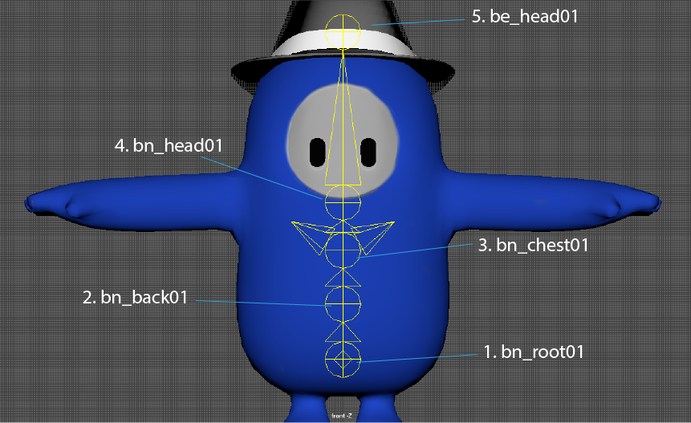
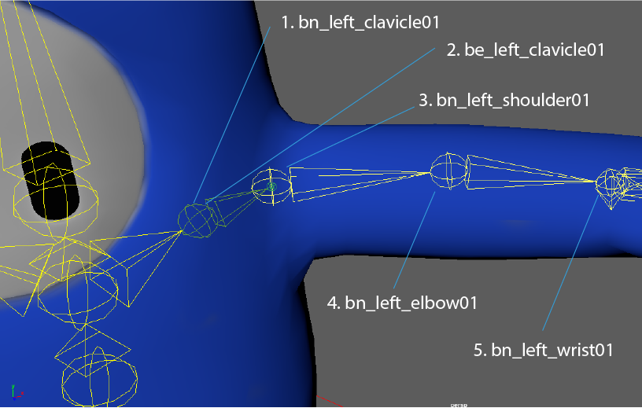
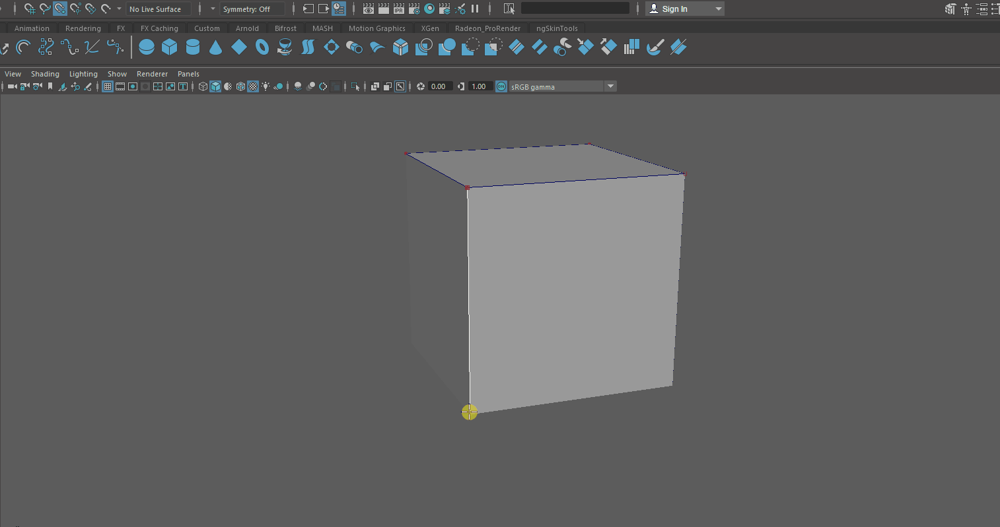
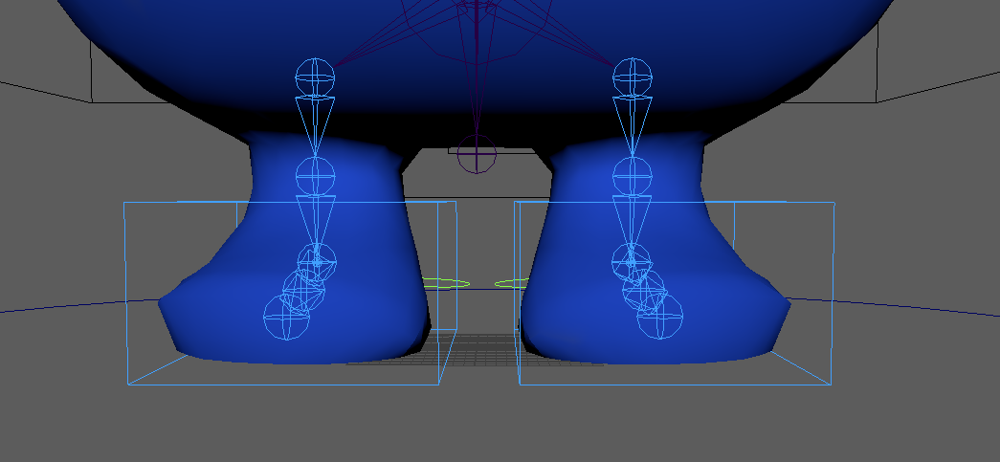
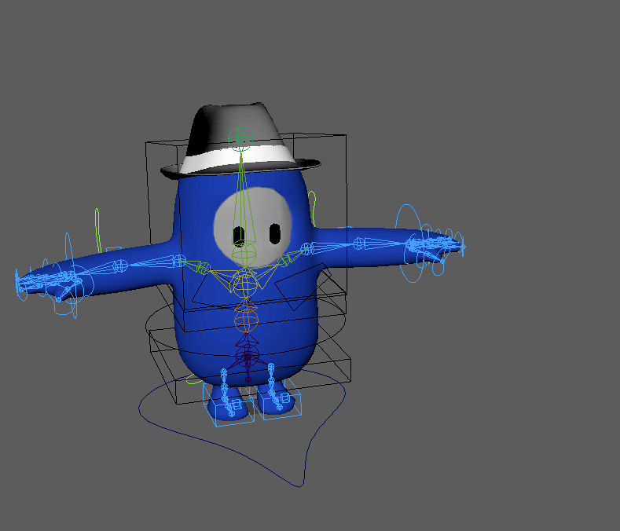
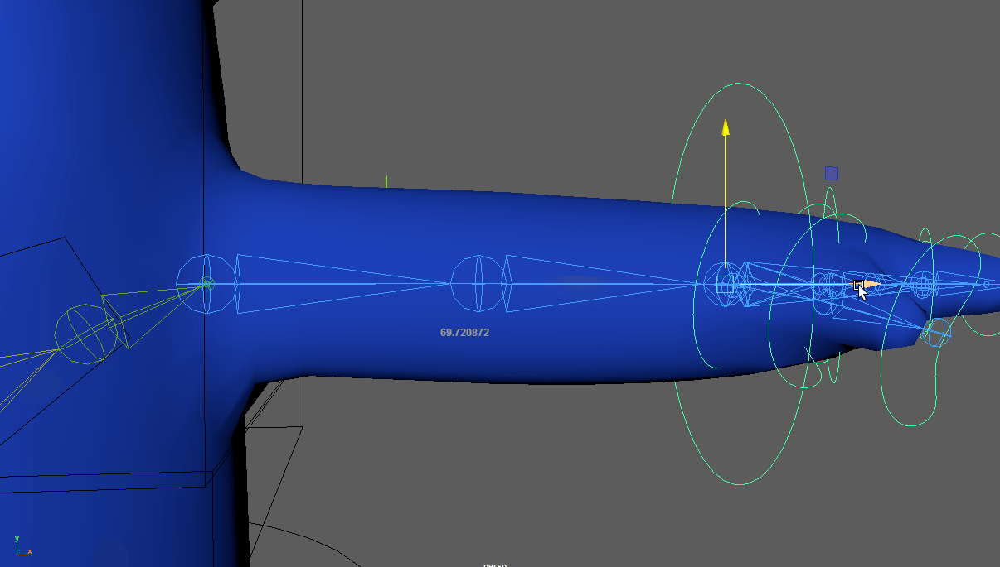
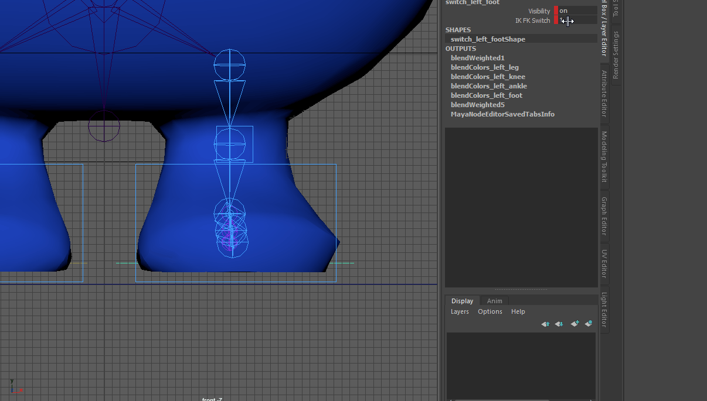
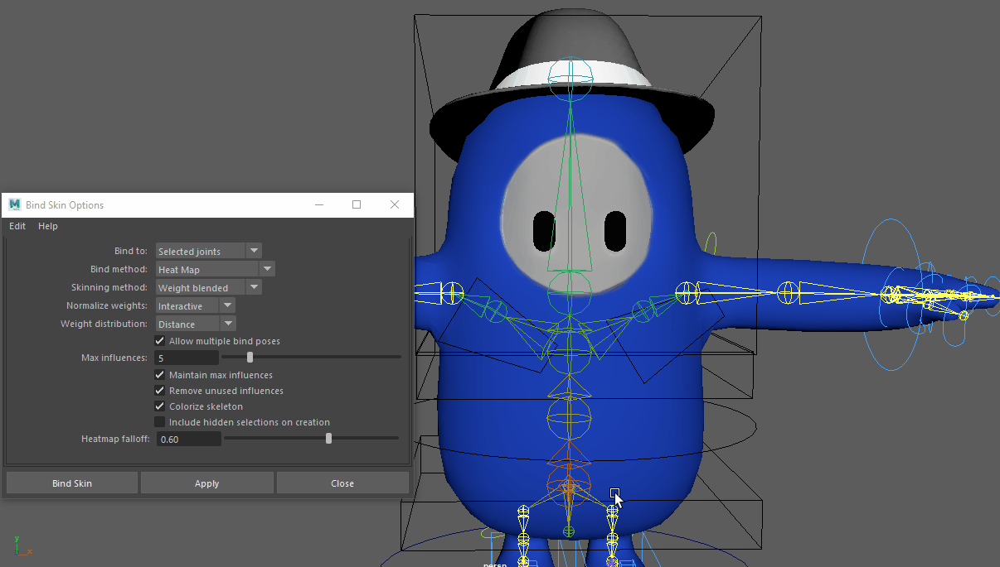
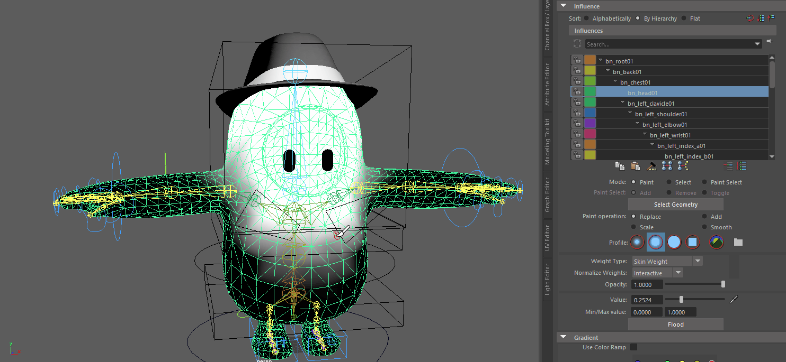

Ahora veremos los siguientes temas:
- Cómo poner los Huesos bn y be de un esqueleto humanoide.
- Cómo hacer controllers personalizados.
- Constraints de los controllers de un personaje humanoide.
- Expresiones de los ojos
- Foot roll (DRVs, constraints y node editor)
- Stretch en las extremidades (Node editor)
- IK_FK de brazos y piernas (Node editor)
Bones
Comencemos viendo la estructura ya terminada de los huesos.
La mejor manera de hacer esto es insertar los huesos del centro y los del lado derecho para después espejear ese lado y completar el rig.
Dejaré aquí las fotos del cuerpo con los nombres de cada hueso y les pondré números para que sepan en qué orden se deben de insertar. Empecemos por la parte central del cuerpo.
Ahora haremos el brazo izquierdo hasta los dedos.
En caso de que se lo pregunten, no, no es un error que hayan dos huesos en el mismo lugar. Nos vamos a la pestaña de Rigging y le damos a Skeleton -> Insert Joints. Damos click en bn_chest01 y arrastramos hasta
llegar a la clavícula; en cuanto suelten el mouse se creará otro hueso. Es muy importante que una vez tengan el bn_left_clavicle01 le den click sin mover el mouse para crear otro hueso en exactamente la misma posición.
Nómbrenlo be_left_clavicle01 y continúen extendiendo huesos hasta la muñeca como se muestra en la imagen.
Una vez esté lista esta parte del brazo, deberemos de proseguir con la estructura de la muñeca. Ahora requeriremos insertar huesos en varias direcciones, siempre partiendo del bn_left_wrist_01.
¡Muy bien! Ya tenemos los huesos de un brazo, ahora vamos a trabajar las piernas. Será necesario insertar el hueso de la pelvis, pero para crearlo no deberemos de mover el mouse,
solo hay que dar click en el hueso bn_root01 para que el nuevo hueso al que llamaremos bn_pelvis01 se encuentre en la misma posición que su padre. Después insertamos un hueso más abajo,
saliendo de la geometría.
Como podrán ver en la imagen, para poder diferenciar al root de la pelvis hay que ajustar el tamaño de los huesos. Esto va a ser importante por que necesitaremos insertar los huesos de la pierna en el bn_pelvis01.
Los bones a añadir son los siguientes:
Bien, ya saben como hacer los bones y bone ends, así que no explicaré tan a profundidad como antes. Simplemente usen la herramienta para insertar huesos y una vez lleguen al be_left_foot_01 den click sin mover el mouse para generar el bone que sigue y continúan.
Asegurense de seleccionar los bone ends (huesos cuyo nombre comience con "be") y pongan en 0 todos los valores joint orient del attribute editor.
Por último, tendremos que espejear los huesos para conseguir
el lado izquierdo con el menor esfuerzo posible. Seleccionamos el hueso padre de lo que vamos a espejear (bn_left_clavicle01 y bn_left_leg01) y le pedimos a las opciones de mirror joints que reemplacen
left por right.
Controladores
En esta ocasión aprenderemos a crear controladores personalizados. Primero hay que crear un cubo y dejarlo en el origen (en el gif no está en el origen pero debe de estarlo), luego hay que usar la CV Curve Tool junto con Snap to Points para delinear los extremos de dicho cubo. No importa si se repiten los puntos en los que dan click. Ya que terminen de dibujar, pulsen enter y borren la geometría.
A esta curva con forma de cubo podemos modificarle los control vertex para darle la figura que deseemos. Yo recomiendo darle una figura rectangular para poder usar este controlador como un "zapato" que controle al pie. una vez que el controlador adquiera la figura que deseamos, necesitamos crearle un grupo y trasladar el grupo para que esté más o menos en la posición que vemos en la foto de abajo.
Ejemplo de la figura que se le puede dar al controlador de los pies, en forma de rectangulo
Sabiendo cómo modificar controladores, haremos varios de ellos con figuras convenientes para mover partes del cuerpo del Fall Guy. Las figuras que yo utilicé fueron las siguientes:
- Una C para el centro de gravedad (bn_root01).
- Una caja para la pelvis.
- Un círculo para la espalda.
- Otra caja para el pecho.
- Un cubo para la cabeza.
- Un trapezoide para cada hombro.
- Un círculo para las muñecas.
- Cículos deformados para cada hueso de los dedos.
Simplemente hará falta renombrar los controladores a anim_pelvis, anim_back, etc... y emparentarlos en el mismo orden que los huesos.
Constraints de los controladores
Como bien habrán visto, hicimos controladores para un IKs, por lo que deberemos de hacer algunos constraints. Comencemos por los del centro del cuerpo, simplemente deben de poner orient constraints a sus respectivos huesos y listo.
Lo siguiente serán los brazos, aplicamos un IK del bn_shoulder al bn_wrist y luego hacemos un controlador cuadrado y le aplicamos un constraint de pole vector al codo para que lo siga.
Ya que se hace eso en ambos brazos, necesitamos hacerlo en las piernas. Se aplica el IK desde el leg hasta el ankle y se aplica el constraint de pole vector con un controlador nuevo y la rodilla.
Expresiones de los Ojos
Agregamos 4 atributos flotantes al controlador de la cabeza: feliz, triste, enojado y parpadeo. Después de eso, duplicamos los ojos 4 veces y modificamos tanto su nombre como su geometría para que parezca enojado, triste, feliz y parpadeando.
Ahora seleccionas todos los ojos modificados y luego los ojos originales, te vas a la pestaña Deform -> Blendshape, le ponemos un nombre como "Expresiones" y en la pestañita de Advanced ponemos pre-deformation.
Una vez hecho esto, seleccionamos el controlador de la cabeza y abrimos el Connection Editor. Nos aseguramos de que las opciones de este controlador estén del lado from.
Ahora seleccionamos los ojos originales y, en Channel
Box/Layer Editor damos click en el INPUT Expresiones que creamos para después presionar "Reload Right" en el connection editor.
En el lado izquierdo vete hasta abajo y selecciona la expresión, por ejemplo "Feliz".
Ahora busca la opción weight en el lado derecho y expándela; dale click a feliz y el atributo quedará conectado a la geometría correspondiente.
Por ultimo, mete los ojos modificados en un grupo y ocúltalo.
Foot Roll
Este sistema tiene que hacerse dos veces, por lo que tendrán que repetir este proceso para el otro pie ya que no hay forma sencilla de espejearlo. Veamos el pie derecho como ejemplo: se duplica el hueso bn_right_ankle01, el
cual se duplicará junto con sus hijos, no los borren. Preferiblemente ajusten el tamaño de los radios de estos huesos para diferenciarlos de los originales.
Ahora renombren estos huesos duplicados
para que sigan la nomenclatura Drv_right_ankle. Utilicen la herramienta Insert Joints para extender un hueso extra desde el Drv_left_fingers hasta el otro extremo del pie, como se ve en la foto
de abajo.
A este hueso le llamaremos Drv_left_heel. Deberemos de seleccionar el hueso padre Drv_left_ankle y desemparentarlo con shift + P; luego simplemente habrá que usar reroot skeleton mientras que seguimos seleccionando este hueso y el parenting se invertirá.
Tendremos que agregar un atributo llamado "Foot Roll" al controlador del pie. Selecciona la cajita y agrega este atributo como flotante con un rango de -1 a 1.
Ahora utilizaremos el set driven key, así que carga este controlador como driver. El parámetro a modificar de este controlador será nuestro atributo "Foot Roll" por supuesto. Como driven, tendrás que cargar los siguientes huesos:
- Drv_left_heel
- Drv_left_fingers
- Drv_left_foot
Los valores a modificar en los drivens siempre será el de rotación en Z. Así como está todo ahorita mismo, selecciona todos los drivens y la rotación Z para darle set driven key y así marcar la pauta del atributo "Foot Roll" en 0.
Ahora solo quedan por hacer las Keys del valor -1, 0.5 y 1 del "Foot Roll".
Para el -1: Ponle -1 al
valor del atributo "Foot Roll" y selecciona solamente Drv_left_heel; rótalo en Z para que la punta del pie suba exageradamente como se muestra en la foto.
Para el 1: Ponle 1 al valor del atributo "Foot Roll" y selecciona Drv_left_fingers y Drv_left_foot; rótalo en Z
para que el personaje se ponga de puntitas de manera exagerada.
Para el 0.5: Ponle 0.5 al valor del atributo "Foot Roll" y selecciona solamente Drv_left_foot; rótalo en Z para que el personaje se ponga
de puntitas.
Ahora viene algo ligeramente complicado de explicar visualmente así que presten atención. Ya tenemos el comportamiento de los huesos configurado con el Set Driven Key, pero hace falta vincular este sistema con los huesos del pie. Haremos
que los huesos se comporten como este sistema dependiendo del valor del atributo "Foot Roll".
Para ello, tendremos que poner constraints como se ve en el GIF de abajo. Asegúrense de seleccionar el triángulo del Drv y luego el
triángulo del bn.
Noten que es:
- Drv_right_fingers con bn_right_foot01
- Drv_right_foot con bn_right_ankle
Teniendo hecho todo lo anterior, su foot roll debería de funcionar tal y como Dios manda, solo hace falta repetirlo en el otro pie.
Stretch en las extremidades
Para obtener un efecto de caricatura, haremos posible que el personaje estire las piernas y los brazos más allá de lo que debería de ser posible.
Seleccionamos el controlador de la muñeca derecha y le agregamos un atributo llamado "Stretch Arm" que será un enum con las opciones de On y Off.
Vamonos a Create -> Measure Tools -> Distance tool y ponemos dos puntos en cualquier parte desde la vista frontal. Nombramos al primer punto como inicial_r_arm y al segundo como final_r_arm. Ahora, con el snap to points acomoda el punto inicial en el hueso del hombro y al punto final en el hueso de la muñeca.
Ahora abriremos el node editor y añadiremos el controlador de la muñeca anim_right_wrist, así como los huesos bn_right_shoulder01 y bn_right_elbow01. Una vez hecho
esto, agregaremos un multiplydivide y dos conditions. Une los nodos de la siguiente forma:
Con las conexiones hechas solo hace falta seleccionar el multiplyDivide y dirigirse al attribute editor. Deberemos poner divide en el campo operation y hacer que el input 2 tenga el mismo número que input 1.
Hacemos exactamente lo mismo seleccionando la primera condición del stretchy arm y en el attribute editor ponemos el second term igual al first term. Definimos la operación como Greater or Equal y listo.
El brazo derecho por fin se puede estirar, ahora solo hay que repetir el proceso para cada pierna y el otro brazo.
IK FK de brazos y piernas
Ya tenemos el IK hecho, pero ahora deberemos de hacer los FKs y los huesos neutrales. Se duplican los huesos del hombro en adelante y del leg en adelante 2 veces; uno de los duplicados serán los huesos neutros y los otros
serán los huesos del FK. Renombramos con Search and Replace Names para que los 01 se vuelvan FK y IK, pero el nombre se mantenga correctamente en el esqueleto neutral.
Luego se hacen los controladores de los FKs y se
ponen los orient constraints en los huesos correspondientes.
Para alternar entre IK y FK necesitaremos hacer switches para cada extremidad y agregarles un atributo flotante de nombre "IK FK Switch" con un rango del 0 al 1.
Ahora que tenemos los IK/FK, empezaremos a conectar el sistema del brazo (que es el más difícil). Dejemos esto claro, la lógica es la misma para cada parte del cuerpo, solo hay que entenderlo y replicarlo. Para este ejemplo usaré el brazo derecho.
Seleccionaremos el switch_right_arm y todos los huesos del hombro en adelante, en sus versiones IK, FK y neutrales. Abrimos el node editor y agrupamos los huesos IK, FK y neutros para que estén entendibles... una vez estén acomodados selecciona todos los nodos y oprime la letra P para fijarlos.
En mi caso yo siempre acomodo el switch hasta la izquierda, seguido por todos los huesos del hombro (De arriba para abajo, el IK, el FK y por último el neutral), luego los huesos del codo, los de la muñeca y así sucesivamente
Debemos de comprender algo antes de empezar, y eso es que en este caso cada 3 huesos (IK, FK y neutral) se contarán solo como uno. ¿Por qué? Por que en este sistema vamos a definir qué comportamiento tendrá el esqueleto neutral, si el del IK o el del FK (dependiendo del valor del switch), por cual en realidad debemos de considerar que aunque nosotros veamos tres tipos de huesos, estos equivalen a un solo "joint". A partir de ahora (y únicamente en este tema) me referiré como joint a los tres huesos de una articulación.
Muy bien, terminemos esto. En resumidas cuentas, cada joint requerirá de un blend color, por lo que requeriremos 9 para todo el brazo. La lógica de esto es que debemos de conectar el atributo "IK FK Switch" del switch
con el blend color correspondiente a ese joint (se une con el Blender). Posterior a ello debemos de conectar el rotate del IK al Color 1 y el rotate del FK al Color 2 (realmente
no importa el orden, pero es necesario que haya uniformidad, o sea que todos los IKs de los joints vayan al mismo número y todos los FKs vayan al otro). Por último, se conecta el Output del blendcolor con el rotate del
hueso neutral.
Eso es todo; estas conexiones permiten que el blendColor defina el comportamiento del hueso neutral a partir del valor del parámetro "IK FK Switch". Corto, pero cuando tienes 9 joints, eso equivale 27 nodos por brazo, por lo que tardará un rato. Simplemente hará falta repetir lo mismo para el brazo derecho y replicar este proceso para con la leg, knee, ankle y foot de la pierna.
Set Driven Key
Para estilizar más este rig, será necesario agregar un set driven key donde el valor del switch vuelva visibles al IK e invisible al FK dependiendo de su número y viceversa.
Switch con el set driven key que cambia la visibilidad del IK/FKSimplemente carga como driver el switch y como driven los siguientes elementos:
- anim_left_legFK
- anim_left_kneeFK
- anim_left_ankeFK
- anim_left_footFK
Con el switch en el número correspondiente al FK (o sea el número con el que los huesos neutrales se mueven con los controladores FK), pon la visibilidad de los controllers en visible y dale "Set Key". Ahora cambia el valor del switch
y apaga la visibilidad de los controladores y dale "Set Key".
Falta hacerlo al revés, selecciona los siguientes elementos como driven:
- anim_left_footIK
- anim_left_kneeIK
Repite el proceso del Set Driven Key para volver estos controladores visibles en su estado del switch e invisibles en el otro. Ya nomás hay que hacer esto mismo para cada extremidad y el sistema estará listo.
Skinning
Debido a que ya conocen este proceso no profundizaré mucho pero a final de cuentas son 3 simples pasos.
Primero, utiliza la herramienta de selección por nombre para encontrar todos los huesos "bn" neutrales; escribe bn*01 y deberían de seleccionarse dichos huesos. Ahora selecciona toda la geometría y haz el skin con heatmap de ser posible.
Heatmap SkinningFinalmente, se tiene que pintar la influencia de los huesos para que la geometría se mueve de manera orgánica. Para ello se utiliza el paint skin weights y requiere de mucho cuidado a la hora de pintar para no borrar accidentalmente la influencia de otro hueso próximo.
Al finalizar este largo proceso de pintado, ¡por fin habrás terminado tu rig intermedio!